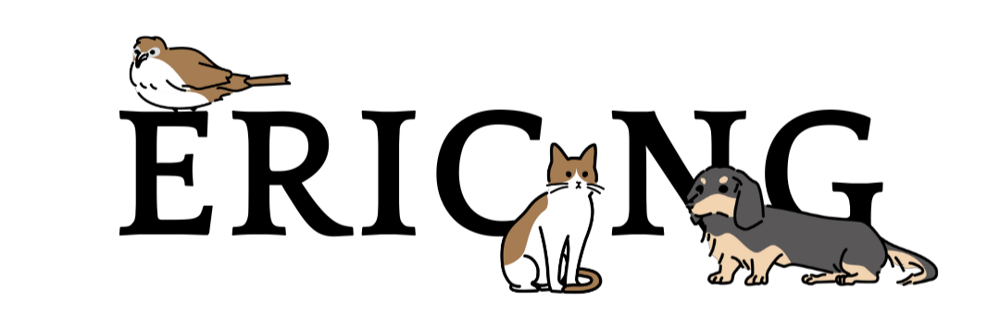

He's watching. Give him something to do.
Your character following the cursor is the best moment in the whole world. The empty space around him is the problem. Here are three ways to fill the sides so people stay, play, and leave knowing who you are.
Where it's at
src/ui/AboutOverlay.js: your 3D character in the middle tracking the cursor, the ERIC NG plaque on top, a nameplate dock at the bottom. Left and right are empty vignette.
What's off
About 60% of the screen is darkness. He's interactive, but there's nothing to do with him beyond watch. A few lines of copy are out of date (see the verdict).
The move
Make him the controller. Emotes, dialogue, and a quest log that warps you to other islands. Meadow becomes the hub of the whole world.
Pick a layout
The figure is a stand-in for your real 3D character (his eyes follow your cursor here too). Click into a scene, then try the keys.
A · Character Select
Like a game's character screen. Left: who you are and emote buttons that make the character move. Right: a quest log of all 6 islands (click to warp) and what's playing on your Jukebox.
Click him to talk · keys 1 to 4 emote

Profile
Emotes
Quest log 3 / 6
Now playing
Eric Ng Min Chern
CS grad, University of Edinburgh · Ex-Barclays and BlackRock · Open to work
Why it works
Everyone who's played a game knows this screen instantly. Emotes give people a toy, so they stay. The quest log turns About into the hub: from here you can warp anywhere and see what you haven't found yet.
HCI + accessibility
Clear left-right split: who he is on the left, where to go on the right. Emotes have keys and buttons. Found state is shown with a tick, not colour only. Cards slide in from their own side for spatial sense.
How it'd be built
Emotes map to AnimationController states you already have (wave, jump, dance from your FBX set). Quest log reads MapOverlay's visited set and calls the existing warp. "Now playing" borrows the shared AudioEngine and your pinned track.
Watch out
Only add emotes you actually have animations for. Keep the cards narrow so he stays the hero. On phones the cards become a swipe strip under him.
B · Talk to Eric
He's an NPC now. A game dialogue box at the bottom, his lines type out, you pick replies. Your real photos sit on the right as polaroids you can shuffle.
Sample lines, rewrite them in your voice
Conversation 0 / 4
Ask him anything on the list. He's friendlier than he looks.
Why it works
The most personal option: people hear you, in your voice, the way they'd meet a character in a game. Choices mean visitors control the pace. Polaroids show your life, not your CV.
HCI + accessibility
Numbered choices (1 to 4), Enter skips typing, the text region is aria-live. Seen choices dim so you know what's left. Every answer offers a way back or out.
How it'd be built
A tiny dialogue tree object (lines + choices + next) in a data file. The typewriter is a timer. Talking can trigger the character's talk or nod animations for extra life. Around 140 lines.
Watch out
Lives or dies on the writing. Cringe lines are worse than none, so keep them short and true. People in a hurry might not click through, so the dock still needs the essentials.
C · Orbit
Facts about you orbit him on a tilted ring, passing behind and in front. Hover one to stop it and read more. Drag sideways to spin the ring yourself.
Drag to spin · hover a chip
Eric Ng Min Chern
CS grad, University of Edinburgh · Ex-Barclays and BlackRock · Open to work
Why it works
Very 3D, very "world": the facts live in the same space as him, like little moons. Strong first-glance wow, and it fills both sides without cards.
HCI + accessibility
Moving text is hard to read, so hover and focus stop the ring. Chips are real buttons for Tab. Reduced motion freezes the ring in place.
How it'd be built
Chips placed on an ellipse in JS each frame, depth from sin(angle) controls scale, opacity and whether they pass behind him. Could become real 3D sprites in Three.js later.
Watch out
Reading on the move is tiring, and it can tip into gimmick. Gets cluttered past 8 chips. Worst on mobile.
Character Select, and clicking him starts the dialogue.
Character Select fills the sides with things people actually use: who you are on the left, where to go next on the right. Emotes give everyone a toy, and the quest log turns Meadow into the hub of the world. Then steal the best bit of Talk: clicking the character opens a short dialogue in his speech bubble. Two layers, the quick read and the deeper chat.
Copy fixes in the current overlay: the hint "move your cursor — he's watching" and the tagline both use em dashes, which the brand bans. The dock says "100% procedural", but the world is now a Blender GLB, so that's no longer true. "Graduating 2026" is stale now that it's November 2026. And About says Edinburgh while Contact says London: pick one story (CS grad from Edinburgh, based in London).